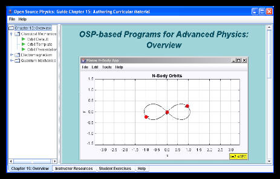

[Physics demo programs are packaged in the osp_demo.jar file on this CD.]
Open Source Physics Launcher is a Java application that can execute (launch) other Java programs. We use Launcher to organize and distribute collections of ready to run programs, documentation, and curricular material in a single easily modifiable package.
Executing a Java archive (jar file) starts an instance of Launcher containing curricular material as described in Open Source Physics Guide. Double-clicking on a leaf-node in the Launcher's left-hand "tree" launches a Java application. The right hand panel shows html-based documentation for the given program. The following launcher packages are available on the OSP CD and from the OSP website:
Launcher was written by Doug Brown and is being distributed by the Open Source Physics project under the GNU GPL license.